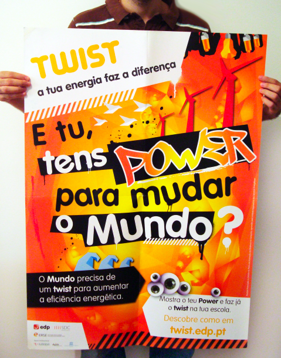

Toda a informação dos cursos da escola está aqui!
Tecnico de Gestão de Programação de Sistemas Informáticos
O Técnico de Gestão e Programação de Sistemas Informáticos é o profissional qualificado que, de uma forma autónoma ou integrado numa equipa, realiza actividades de concepção, especificação, projecto, implementação, avaliação, suporte e manutenção de sistemas informáticos e de tecnologias de processamento e transmissão de dados e informações.
Animador Socio-Cultural
O Animador Sociocultural desenvolve a sua prática social em equipas multidisciplinares, planeando implementando e avaliando actividades nos domínios social, artístico e lúdico enquadrando as características culturais de referência nos diferentes grupos etários com que trabalha. Esta formação permite um enquadramento profissional diversificado e abrangente, privilegiando a intervenção lúdica e socioeducativa em ateliers de tempos livres, escolas, centros de dia, lares de terceira idade, hospitais, associações e organizações culturais/sociais, juntas de freguesia, câmaras municipais e instituições particulares de solidariedade social.
Técnico de Análise Laboratorial
Este curso possui um carácter abrangente generalista, capaz de responder com mais eficácia a um espectro diversificado de referencias de emprego. Os técnicos assim qualificados poderão exercer funções de Analista de Laboratório e Operadores de controlo da Qualidade. As indústrias (química, agro-alimentar, têxtil, metalúrgica, metalomecânica, etc.) e o sector dos serviços (Câmaras Municipais e outros departamentos públicos ou privados relacionados com a química e o ambiente), são locais priveligiados para o desenvolvimento das funções referidas.
Técnico de Electrónica e Telecomunicações
O Técnico de Electrónica e Telecomunicações é o profissional qualificado apto a desempenhar tarefas de carácter técnico relacionadas com a instalação, utilização, manutenção e reparação de materiais e equipamentos electrónicos de telecomunicações, no respeito pelas normas de higiene e segurança e pelos regulamentos específicos.
Técnico de Gestão
O Técnico de Gestão é o profissional qualificado que exerce competências no âmbito da gestão das organizações, apto a colaborar nos aspectos organizativos, operacionais e financeiros dos diversos departamentos de uma unidade económica/serviço público, com capacidade para a tomada de decisões com base em objectivos previamente definidos pela Administração/Direcção.
Técnico de Gestão do Ambiente
O Técnico de Gestão do Ambiente é o profissional qualificado apto a, respeitando as normas de qualidade, segurança e saúde no trabalho, intervir activamente no domínio da gestão da qualidade do ambiente e do desenvolvimento sustentável.
-
Revistas e Livros
Já podes aceder aos livros e revistas mais recentes na tua biblioteca!

-
Bar da Escola
Movimento TWIST Entrega no bar pilhas que não utilizes e poupa energia!
-
Horários
SECRETARIA09.30h às 12.30h e 14.00h às 16.30h
CONTABILIDADE09.50h às 12.00h e 14.00h às 16.30h
CENTRO DE RECURSOS09.00h às 17.30h
REPROGRAFIA08.45h às 13.00h 14.00h às 18.00h
-
Mantem-te em contacto!
Email:
info@eped.ptMorada:
Largo Bulhão Pato, nº 56
2825-114 Monte de Caparica
Quinta da TorreTelefone:
+351 212 946 040